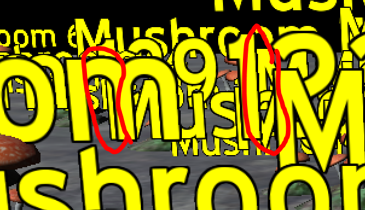

Currently, since Text3D seems to create a billboard where the font pixels are flush to the edge, it causes a nasty dithering effect when the camera is moved slowly pixel-by-pixel. I’ve noticed with our other Billboards, to avoid this dither, the image we render to the billboard simply needs to have a transparent margin around the edge. Whenever we have opaque pixels near the edge of the image, it causes this same dither.
The solution seems clear-- just make sure you have transparent pixels at the edge of all images intended for billboards. However, since Text3D is built in, I think we’d have to modify the Core Urho3D code to fix this – or we’ll have to make our own version of Text3D (we could base it off Urho’s).
The two defects we have with Text3D right now are:
- This dithering defect, and
- We can’t set the “RenderOrder” – it’s stuck at 128.
Right now, it’s looking like we’ll have to make our own Text3D Rendering feature, unless there is an easy workaround for these two defects.
Here’s an image of the Samples of Text3D (“SignedDistanceFieldText”). If you set the Camera motion scalar to 0.01, and the move forwards or backwards, those edges look like crazy escalators… very distracting. As a still shot, this isn’t too bad. But when you start moving slowly – these are turn into animated escalators! (and our Map application in Track mode, moves slowly, pixel-by-pixel, this Text3D looks pretty bad).
